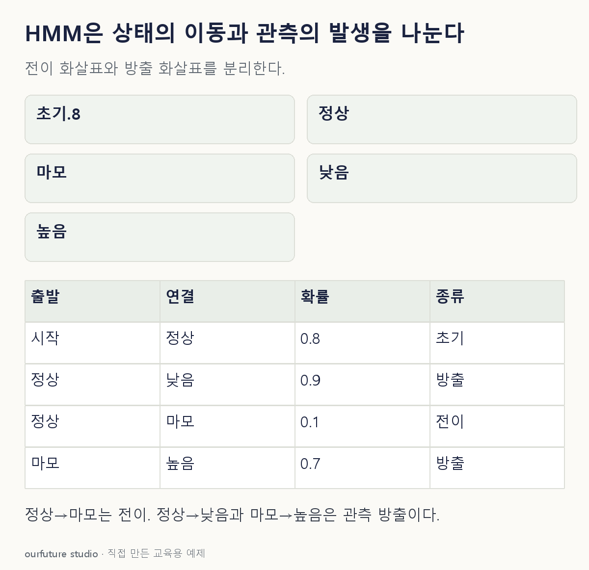

핵심 이론
은닉 마르코프 모형 HMM은 직접 관찰되지 않는 상태열이 있고 각 상태에서 관측값이 확률적으로 발생한다고 놓는다. 기본 1차 모형은 다음 상태의 분포가 현재 상태에 의존하는 마르코프 구조를 사용한다. 상태를 알고 있을 때 그 시점 관측의 분포를 정하는 것이 방출 모형이다.
초기분포 π는 첫 상태, 전이 A는 현재 상태에서 다음 상태로 갈 확률, 방출은 상태가 주어졌을 때 센서 관측이 나올 확률이다. P(관측|상태)를 P(상태|관측)와 바꾸지 않는다. 관측 후 상태를 추론하려면 초기·전이·방출과 관측을 함께 사용해야 한다. 같은 출발 상태에서 가능한 다음 상태로 향하는 전이확률의 합은1이다. 정상·마모 두 상태라면 정상→마모가p일 때 정상→정상은1−p다. 방출확률도 한 상태에서 가능한 관측 전체에 대해 합이1이어야 한다.
주어진 모형에서 관측열 가능도를 구하는 문제, 가장 그럴듯한 상태 경로를 찾는 문제, 모형 매개변수를 학습하는 문제도 서로 다르다. 대표적으로 forward 계산과 Viterbi 경로 탐색을 구별한다. 아래는 두 시점의 한 경로가 관측과 함께 나타날 확률이며 모든 경로를 합한 관측열 확률이 아니다.
작은 예제로 확인하기
숨은 상태는 정상 N·마모 W다. P(z₁=N)=0.8, N→W=0.1, 정상에서 낮음=0.9, 마모에서 높음=0.7이다.
| 지정 경로·관측 | 곱할 확률 |
|---|---|
| 첫 상태 정상 | 0.8 |
| 정상에서 낮음 | 0.9 |
| 정상→마모 | 0.1 |
| 마모에서 높음 | 0.7 |
지정 경로 N,W와 관측 낮음,높음의 결합확률은 0.8×0.9×0.1×0.7=0.0504다. 관측열만의 확률은 다른 상태 경로의 기여도 더해야 한다.
그림으로 확인하기

직접 고르기
장비의 내부 상태는 정상·마모, 센서는 낮음·높음이다.
전이확률이 설명하는 것은?
- 1. 상태가 주어졌을 때 센서값의 확률
- 2. 현재 상태에서 다음 상태로 갈 확률
- 3. 첫 상태의 확률만
- 4. 관측 뒤 특정 상태일 확률
정답과 오답의 이유 확인하기
정답 2번 — 현재 상태에서 다음 상태로 갈 확률
전이는 숨은 상태 사이의 이동이다. 관측값이 나올 조건부 확률은 방출이다.
- 1번: 방출확률의 역할이다.
- 3번: 초기분포의 역할이다.
- 4번: 관측을 조건으로 한 사후 상태 추론과 다르다.
조건 하나 바꾸어 풀기
정상→마모 전이확률을0.1에서0.2로 바꾸고 정상→정상도0.9에서0.8로 조정해 두 확률의 합1을 유지한다. 초기·방출확률은 그대로다. 지정 경로 N,W와 관측 낮음,높음의 결합확률은?
풀이: 0.1008.
0.8×0.9×0.2×0.7=0.1008이다. 지정 경로의 전이가 두 배이므로 이 경로의 결합확률도 두 배다. 다른 경로를 합산하지 않았으므로 관측열 전체 가능도가 아니다.
다시 떠올릴 단서
전이는 상태에서 상태, 방출은 상태에서 관측.
근거와 적용 조건
- hmmlearn Tutorial — 도입의 π·전이·방출과 세 기본 추론 문제. 확인일 2026-10-30.
상황·수치·보기·조건 변경은 자체 교육 예제다. 민간 복원 문항의 공식 정답이나 실제 성능·학습 효과를 뜻하지 않는다.
읽은 내용을 적용해 보기
1차 HMM의 지정 경로 N,W와 관측 낮음,높음만 다룬다. 관측열 가능도·상태 사후확률·Viterbi 경로를 계산하지 않는다. 전이 입력p를 바꾸면 정상→정상은1−p로 함께 조정한다고 가정한다. 이 지정 경로의 곱에는 정상→마모p만 들어가며, 마모 출발 전이행의 수치는 이 계산에 필요하지 않다.